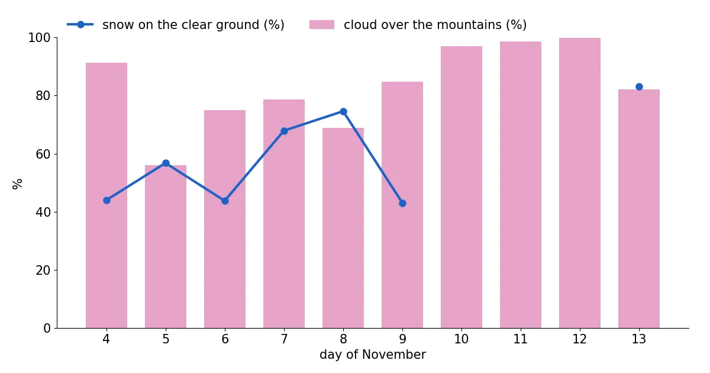
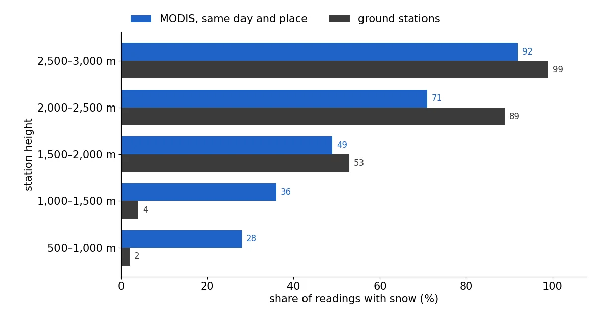
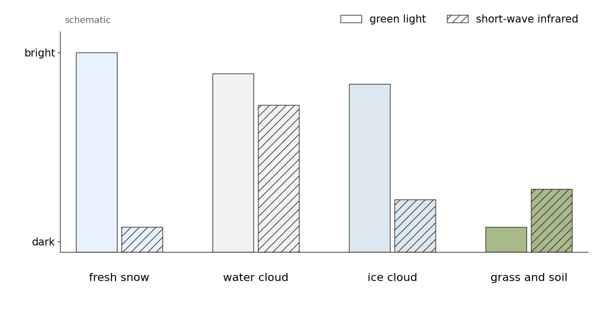

Alps snow cover from satellite, checked against 555 snow stations: white from about 2,000 m (13 November 2026)
How much of the Alps is white? We decoded NASA's daily MODIS snow maps pixel by pixel for the whole Alpine arc, then did what a satellite map rarely gets: a check against the ground. 555 automatic and manual snow stations in Switzerland, Austria, South Tyrol, Trentino and France measured snow depth on the same days. The result is useful and humbling. High up, satellite and stations agree well. Below about 1,500 m, MODIS saw snow far more often than the stations did, so its first answer, white from about 1,200 m, was too low. The stations put the snow line at about 1,750 to 2,000 m before the cold front of 13 November.
See the live snow forecast for Alps in the SnowScope appSnow depth, powder alerts and the 3D map, free.
A week the satellite mostly saw cloud
MODIS flies on two NASA satellites, Terra in the morning and Aqua in the early afternoon, with pixels of about 500 m. Between 4 and 13 November the clouds won almost every time. With both passes combined, cloud covered 91 % of the mountain ground on 4 November, 56 % on 5 November (the clearest day of the ten), 97 % on 10 November, 98 % on 11 November and 100 % on 12 November. On 13 November it was 82 %.
So we built a composite: for every pixel, the most recent day on which Terra or Aqua saw the ground clearly. Any clear pixel within 3 pixels (about 1.5 km) of a cloud on that pass counts as cloud, because cloud edges are where false snow most often appears. The result mixes dates: 18 % of the mountain ground was last seen on 13 November, 21 % on 8 November and 10 % on 5 November. In 21 % of it the satellites never saw the ground once in the 10 days; those pixels are pink on the map.

What MODIS saw
Above 1,000 m, the latest clear looks show snow on 62,721 km² and snow-free ground on 32,568 km², which is 66 % of the ground MODIS could see. By height, 48 % of the clear ground between 1,000 and 1,250 m looked white, 79 % between 2,000 and 2,250 m and 95 % between 2,500 and 2,750 m. Read literally, that puts the snow line at about 1,200 m.
Above 1,500 m the satellite saw 41,400 km² of snow, 77 % of the clear ground. Above 2,000 m it was 25,514 km², 88 % of the clear ground. As the next section shows, the higher figures are the more trustworthy ones.
Checked against 555 snow stations
We took every snow-depth reading from 4 to 13 November at 555 stations in our box: 130 of the Swiss SLF network, 197 of GeoSphere Austria, 219 of the Euregio avalanche services of Tyrol, South Tyrol and Trentino and 9 of Météo-France. Whenever MODIS had a clear view of a station's pixel on the day of a reading, we compared the two: 992 matches. They agree 69.5 % of the time.
The errors are not random. Between 500 and 1,000 m, MODIS saw snow in 28 % of the matches but the stations had snow in only 2 %. Between 1,000 and 1,500 m it was 36 % against 4 %. Between 1,500 and 2,000 m the two are close, 49 % against 53 %. Higher up, MODIS missed snow: 71 % against 89 % between 2,000 and 2,500 m. None of the 61 stations below 750 m had snow on 9 November, nor any of the 60 on 12 November. The 'snow' that the satellite showed on low ground north of the Alps was not there, so the map now leaves out ground below 1,000 m.
On the stations alone, the snow line is clear. On 12 November, 15 of 40 stations between 1,500 and 1,750 m had snow, 24 of 51 between 1,750 and 2,000 m, 60 of 96 between 2,000 and 2,250 m and 61 of 62 above 2,500 m. On 9 November it was 36 of 56 between 1,750 and 2,000 m. We cannot say for sure why MODIS overcounted low down: thin or broken cloud that the cloud mask lets through, valley fog and mixed pixels are all possible, and the product guide lists cloud and snow confusion as its main known weakness.

What weather services and local news said
The reports from the ground tell the same story of a mild start with snow only high up. On 6 November watson.ch wrote that the freezing level would stay around 2,000 m and that only parts of Valais had about half a metre of snow, still below average. In Piedmont, meteorologist Andrea Vuolo reported in Il Dolomiti on 4 November about 20 cm of fresh snow around 2,000 m, with flakes reaching about 1,000 m locally in the heaviest showers, and RaiNews showed the first flakes down to 800 m in Piedmont on 7 November.
The change came at the very end of our window. The Tiroler Tageszeitung wrote on 12 November that, after unusually mild November days, the snow line would drop below 1,000 m on Friday 13 November, with up to 30 cm higher up. 20 Minuten expected the snow line to fall to between 1,200 and 800 m in the night to Friday, with 2 to 8 cm of new snow above about 1,500 m. Only 18 % of our composite comes from 13 November, so most of the map shows the Alps before that front.
How a satellite tells snow from cloud: the NDSI
Fresh snow is one of the brightest natural surfaces in green light. In short-wave infrared, around 1.6 µm, it turns dark, because ice absorbs strongly at that wavelength. Most clouds made of water droplets stay bright in both. The Normalized Difference Snow Index uses this contrast: NDSI = (green − SWIR) / (green + SWIR), with MODIS band 4 for green and band 6 for the infrared.
NASA's Collection 6.1 algorithm first looks for snow wherever the NDSI is above zero, then removes doubtful cases with a series of screens; one rejects any NDSI below 0.1. Clouds come from a separate MODIS cloud mask, and only its 'confident cloudy' class is treated as cloud, so thin or broken cloud can pass as clear. On Aqua, about 75 % of the band 6 detectors do not work; older versions used band 7 instead, but since Collection 6 NASA rebuilds band 6 so both satellites run the same algorithm.
Each pixel carries an 'NDSI snow cover' value from 0 to 100. It is not the share of the pixel covered by snow: the user guide states that fractional snow cover is not calculated in Collection 6.1. Here any value from 1 to 100 counts as snow. Thin icy cirrus can look like snow, dense forest hides snow, and the low November sun and steep shadows weaken the signal.

Satellite and SnowScope map side by side
We also compared MODIS with the SnowScope snow map for 13 November, which still contains part forecast for that day. On the 21,609 km² of mountain ground that MODIS saw clearly on 13 November, the two agree on 70.3 % of the area. Where they disagree, it is mostly MODIS saying snow and our map saying bare: 24.5 % of the area, against 5.2 % the other way round.
The two are not independent, since our map already removes snow where a recent clear MODIS look shows bare ground. But the station check suggests that at middle heights our map's 'bare' was more often right than the satellite's 'snow'.
Tips for skiers
- Below about 1,500 m, do not trust a single satellite snow map this autumn: check a webcam or a station.
- Pink areas on the map were under cloud every day: use the avalanche bulletin and local webcams there.
- After the 13 November front, expect a thin new cover lower down than the map shows; it may not last.
More maps (external sites)
References and credits
- Riggs, G.A., Hall, D.K. and Román, M.O. (2019). MODIS Snow Products Collection 6.1 User Guide, version 1.0. NASA / NSIDC nsidc.org/sites/default/files/c61_modis_snow_user_guide.pdf
- Hall, D.K., Riggs, G.A., Salomonson, V.V., DiGirolamo, N.E. and Bayr, K.J. (2002). MODIS snow-cover products. Remote Sensing of Environment 83, 181-194 doi.org/10.1016/S0034-4257(02)00095-0
- Hall, D.K. and Riggs, G.A. (2011). Normalized-Difference Snow Index (NDSI). Encyclopedia of Snow, Ice and Glaciers, Springer doi.org/10.1007/978-90-481-2642-2_376
- NSIDC: MODIS/Terra Snow Cover Daily L3 Global 500m Grid, Version 61 (MOD10A1) nsidc.org/data/mod10a1/versions/61
- NASA EOSDIS Global Imagery Browse Services (GIBS): layers MODIS_Terra_NDSI_Snow_Cover and MODIS_Aqua_NDSI_Snow_Cover (from MOD10_L2 / MYD10_L2, Collection 6.1) and their colour map www.earthdata.nasa.gov/engage/open-data-services-software/earthdata-developer-portal/gibs-api
- Copernicus DEM GLO-90 (European Space Agency, Copernicus programme) doi.org/10.5270/ESA-c5d3d65
- WSL Institute for Snow and Avalanche Research SLF: IMIS station measurements (open data API) measurement-api.slf.ch/
- GeoSphere Austria Data Hub: station snow depth data.hub.geosphere.at/
- Avalanche warning services Tyrol, South Tyrol and Trentino (avalanche.report): station data avalanche.report/
- Météo-France: nivo-meteorological station data (Licence Ouverte) donneespubliques.meteofrance.fr/
- watson.ch (6 November 2026): Das Wetter in der Schweiz bleibt grau, doch an einem Tag winkt die Sonne www.watson.ch/schweiz/wetter/712908864-das-wetter-in-der-schweiz-bleibt-grau-doch-an-einem-tag-winkt-die-sonne
- Il Dolomiti (4 November 2026): 'Registriamo già 20 centimetri di neve fresca', i fiocchi tornano sulle Alpi Occidentali www.ildolomiti.it/montagna/2026/il-video-registriamo-gia-20-centimetri-di-neve-fresca-i-fiocchi-tornano-sulle-alpi-occidentali-e-scendono-fino-a-quota-1000-metri
- RaiNews (7 November 2026): La prima neve d'autunno imbianca Alpi ed Appennini www.rainews.it/photogallery/2026/11/la-prima-neve-dautunno-imbianca-alpi-ed-appennini-fc17e63a-4943-424a-ac6a-e0ac1c060334.html
- Tiroler Tageszeitung (12 November 2026): Jetzt wird es weiß: Kurzer Wintereinbruch bringt bis zu 30 Zentimeter Neuschnee nach Tirol www.tt.com/artikel/30946780/jetzt-wird-es-weiss-kurzer-wintereinbruch-bringt-bis-zu-30-zentimeter-neuschnee-nach-tirol
- 20 Minuten (12 November 2026): Wetter-Wechsel in der Schweiz: Schneefallgrenze sinkt in der Nacht auf Freitag bis auf 800 Meter www.20min.ch/story/schweiz-wetter-achterbahn-von-schnee-bis-18-grad-ist-alles-dabei-103666002
About these numbers
Data: NASA GIBS daily layers MODIS_Terra_NDSI_Snow_Cover and MODIS_Aqua_NDSI_Snow_Cover (built from MOD10_L2 / MYD10_L2, Collection 6.1, near-real-time), 500 m tile set, decoded with the layer's published colour map back to the product values. Snow = 1 to 100, snow-free = 0. Daily: Terra where clear, else Aqua; clear pixels within 3 pixels of cloud on the same pass counted as cloud. Composite: latest clear look per pixel, 4 to 13 November 2026. Areas use the true pixel size at each latitude. Box 43.6 to 48.4° N, 4.8 to 16.6° E, ground at or above 1,000 m (Copernicus GLO-90). Stations: daily snow depth from the SLF IMIS network, GeoSphere Austria, the Euregio avalanche services (avalanche.report) and Météo-France nivo stations; a station counts as snow-covered at 1 cm or more and as bare at 0 cm; it is compared with the MODIS pixel that contains it, on the same day, only when that pixel was clear. SnowScope comparison: the 500 m SnowScope map of 13 November, depth of 1 cm or more = snow.
Cite this report
For research, teaching or the press: the numbers and charts are free to reuse under CC BY 4.0 with this citation.
SnowScope (2026), Alps snow cover from satellite, checked against 555 snow stations: white from about 2,000 m (13 November 2026), https://snowscope.app/blog/en/2026/11/alps-snow-cover-satellite-modis-13-november-2026.html, accessed 2026-11-13
SnowScope (Atlas Labs). (2026, November 13). Alps snow cover from satellite, checked against 555 snow stations: white from about 2,000 m (13 November 2026). SnowScope snow reports. https://snowscope.app/blog/en/2026/11/alps-snow-cover-satellite-modis-13-november-2026.html
BibTeX
@misc{snowscope2026alpssnowcoversatellitemo,
author = {{SnowScope (Atlas Labs)}},
title = {Alps snow cover from satellite, checked against 555 snow stations: white from about 2,000 m (13 November 2026)},
year = {2026},
month = nov,
howpublished = {\url{https://snowscope.app/blog/en/2026/11/alps-snow-cover-satellite-modis-13-november-2026.html}},
note = {Published 2026-11-13 20:13 UTC; accessed 2026-11-13}
}· CC BY 4.0 · Methods, data and tools →
Follow Alps
Free: a message when fresh snow is coming, and the forecast every morning.
More snow reports

Snow depth in Sölden on 13 November 2026: about 9 cm at the top (3245 m), 5 cm at mid-mountain, none in the valley at 1346 m. 25 cm forecast up high this week, rain below about 1620 m. Glacier vs village, with 46 past winters.

Obergurgl snow report for 13 November 2026: about 20 cm at the top (3024 m), 5 cm at mid-mountain, bare at the lowest lifts (1784 m). Snow forecast for the week: 34 cm up high, 21 cm low down, snow line near 1700 m. Plus the usual early season.

Silvretta Montafon snow conditions on 13 November 2026: 4.5 cm on the top at 2421 m, bare mid-mountain and valley, about 40 cm on the way up high this week while the valley gets rain below 1,500 m.